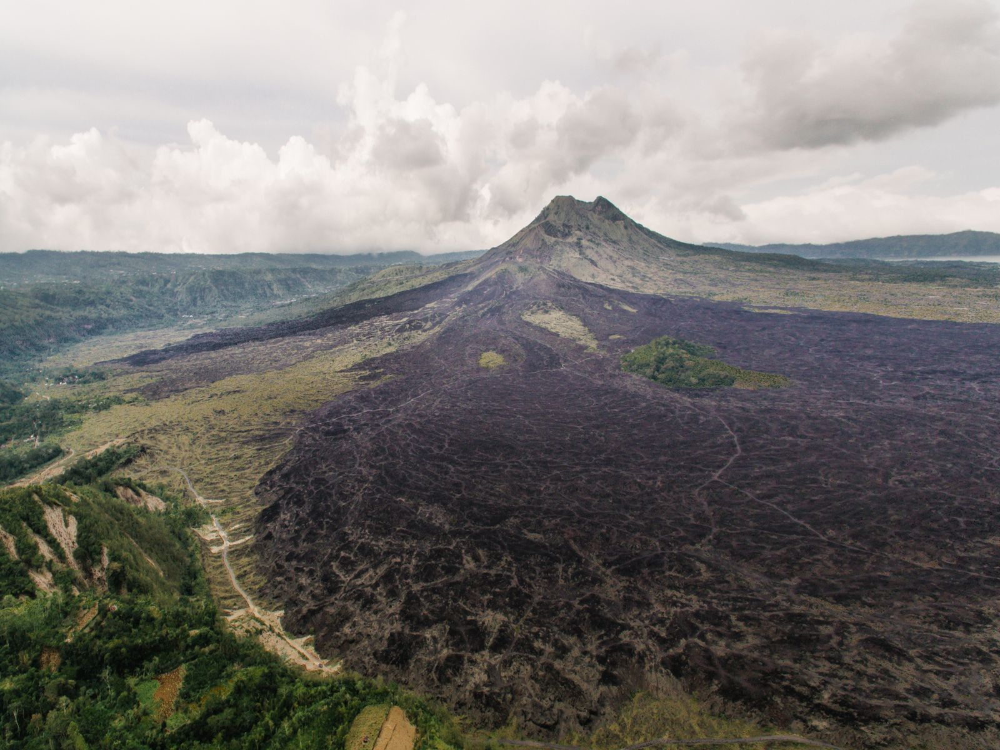

Tectonic Seismology · Station Log
The ground keeps the only honest record.
Seismic monitoring, network design and hazard-science studies for observatories, research groups and infrastructure owners — measured properly, catalogued honestly, and reported with the uncertainties left in.
One thing first: earthquakes cannot be predicted — not by this practice, not by anyone. Whoever offers you a prediction is selling something else. What is sold here is the record.

14Years on instruments
63Stations sited, installed or serviced
9Catalogues homogenised to one scale
3Rapid post-event deployments
0Predictions made — or ever offered
The Instrument · Entry 01
The magnitude–energy explorer
Magnitude is the most misreported number in seismology — usually because the energy behind it goes unprinted. Here it is printed. The explorer below runs on the standard relation, worked in the open; every figure it shows can be checked against the scale table under it.
log₁₀ E ≈ 4.8 + 1.5 × M · E in joules
The standard energy–magnitude approximation (the Gutenberg–Richter energy relation), as the field teaches it. The ≈ is honest: energy also depends on the fault, the rock and the depth, so the relation is the field's ruler — not a measurement of any single event. For the TNT comparisons, this page prints its own conversion and uses exactly it: 1 tonne of TNT = 4.184 × 10⁹ joules.
Step the magnitude
STEPPERS OR SLIDER · 0.1 STEPS · M 1.0 – 9.0
6.0MAGNITUDE (Mw)
M 1.0M 9.0
log₁₀ E13.80
Energy E6.3 × 10¹³ J
Same energy, as TNT≈ 15.1 kt TNT
4.8 + 1.5 × 6.0 = 13.80 → E = 10^13.80 J → ÷ 4.184 × 10⁹ J/t for the TNT figure
Compare two magnitudes
EACH WHOLE STEP OF MAGNITUDE IS ≈ ×31.6 THE ENERGY — ABOUT 32×. IT IS ×10 THE GROUND-MOTION AMPLITUDE. THE TWO ARE OFTEN CONFUSED; THEY ARE NOT THE SAME NUMBER.
6.0MAG. A
3.0MAG. B
Energy ratioM 6.0 ≈ 31,623× M 3.0
10^(1.5 × |6.0 − 3.0|) = 10^4.50 ≈ 31,623×
This is why a magnitude 6 is not “a bit more” than a magnitude 3. It is roughly thirty thousand times the energy — and why “the quake was twice as big” is a sentence that should never survive an edit.
| Magnitude (Mw) | log₁₀ E | Energy E | TNT equivalent | How the field files it |
|---|---|---|---|---|
| 1.0 | 6.30 | 2.0 × 10⁶ J | ≈ 0.5 kg | Recorded by instruments; felt by no one. |
| 2.0 | 7.80 | 6.3 × 10⁷ J | ≈ 15 kg | The daily bread of a local network. |
| 3.0 | 9.30 | 2.0 × 10⁹ J | ≈ 0.48 t | Felt nearby, if anyone is awake and close. |
| 4.0 | 10.80 | 6.3 × 10¹⁰ J | ≈ 15 t | Rattles the region; rarely damages sound buildings. |
| 5.0 | 12.30 | 2.0 × 10¹² J | ≈ 480 t | Damages weak structures near the epicentre. |
| 6.0 | 13.80 | 6.3 × 10¹³ J | ≈ 15 kt | A serious earthquake; the news threshold. |
| 7.0 | 15.30 | 2.0 × 10¹⁵ J | ≈ 480 kt | Major. Damage over a wide area. |
| 8.0 | 16.80 | 6.3 × 10¹⁶ J | ≈ 15 Mt | Great. A generation's reference event for a region. |
| 9.0 | 18.30 | 2.0 × 10¹⁸ J | ≈ 480 Mt | The largest class ever recorded (Chile 1960, Mw 9.5). |
Magnitudes here are moment magnitude (Mw) unless a scale is named. Other scales (ML, mb, Ms) measure different things and are never mixed into a catalogue silently — see Field Note 02.
Services Register · Entry 02
What the practice does
Science support for people who run networks, hold archives, or own structures on restless ground. Four standing services and one on-call commitment — each with the client type it serves and its current status, the way a station log would record them.
| Service | Client type | Programme | Status |
|---|---|---|---|
| Network design & station siting | Observatories, research groups | Densification & new networks | Active |
| Catalogue homogenisation | National & regional surveys | Archive conversion to a single Mw scale | Active |
| Hazard-science studies | Infrastructure owners, insurers' engineers | Seismicity inputs to PSHA — science side only | Active |
| Waveform & focal-mechanism analysis | Universities, research consortia | Event studies, moment tensors | Active |
| Rapid post-event deployment | Research consortia, observatories | Temporary aftershock networks | On call |
Our mapped fault was in the wrong place, and Ruth's stations were the reason we found out from data instead of from an earthquake. The densification paid for itself the day the locations came in.”
Network Manager · Regional seismic observatory
Attached to Field Note 01 — the densification study, projects page.
Fees · Entry 03
The fee shape, printed
Studies are priced in person-days at the rates below, plus instrument lines at cost-shaped rates, plus a fixed report fee. No percentage-of-anything, no success fees, and no charge for saying “the data cannot answer that.”
| Line | Rate | Notes |
|---|---|---|
| Lead seismologist | £780 / day | Design, analysis, the signature on the report. |
| Field seismologist | £540 / day | Siting surveys, installation, servicing. |
| Data analyst | £460 / day | Picking, location, catalogue work. |
| Broadband station hire | £95 / station | Per station, per study period, incl. power & enclosure. |
| Telemetry & data handling | £120 / station | Per station, per study period. |
| Study report & methods note | from £1,200 | Fixed per study type; the methods note travels with the data. |
01Station count & terrain
The dominant cost. Nine stations on farmland and nine stations on a mountain front are two different studies wearing the same name.
02Access & permissions
Landowner agreements, permits and site security take calendar time before they take money; both are priced in the open.
03The state of the archive
A clean digital catalogue homogenises quickly. Forty years of mixed scales and paper logs is a rescue operation, and is quoted as one.
Scope, stated plainly: this is science support. Engineering sign-off — the chartered judgement that a structure is safe — is an engineer's to give and is not offered here. Hazard work from this practice supplies seismicity inputs and their uncertainties; what is built on them is decided by others.
Programme estimator
A PRICING SIGNAL, NOT A QUOTE — IT USES THE PRINTED RATES ABOVE AND SHOWS ITS ARITHMETIC. A REAL STUDY IS SCOPED IN WRITING FIRST.
Lead seismologistdesign & analysis
12
12 days × £780 = £9,360
Field seismologistsiting, installation, servicing
20
20 days × £540 = £10,800
Data analystpicking, location, catalogue
14
14 days × £460 = £6,440
Stationshire + telemetry, per station
8
8 stations × £95 hire + 8 × £120 telemetry = £1,720
Study report & methods notefixed per study type
fixed for this study type = £1,850
Indicative total
£30,170
Travel and site works are passed through at cost and itemised. If the honest scope is smaller than the one you described, the estimate comes back smaller — that has happened, and it is in Field Note 02.